2026年7月23日，中共中央、国务院印发《关于加强新时代社会工作的意见》。关于加强新时代社会工作，下列说法错误的是（）。
A.坚持和加强党对社会工作的全面领导，坚持以人民为中心，走好新时代党的群众路线，坚持和发展新时代“枫桥经验”
B.完善共建共治共享的全球治理观，突出抓好新经济组织、新社会组织、新就业群体党的建设
C.不断增强党在新兴领域的号召力凝聚力影响力，抓好党建引领基层治理和基层政权建设，抓好凝聚服务群众工作
D.坚定不移走中国特色社会主义社会治理之路，推动新时代社会工作高质量发展，以高效能治理促进高质量发展和高水平安全良性互动
习近平指出，改革是人民群众自己的事业，要全体人民共同参与，团结一致攻坚克难。改革过程中，要坚持以人为本，以实绩实效和人民群众满意度检验改革。这段话体现了哪些哲学道理（）。
①人民群众是历史的主体，对社会历史发展起决定性作用
②人的主观能动性的发挥可以决定改革事业的兴衰成败
③实践是检验认识是否具有真理性的唯一标准
④人民群众创造历史的活动可以突破社会历史条件的制约
A.1 项 B.2 项 C.3 项 D.4 项
习近平指出，推进党的自我革命是跳出治乱兴衰历史周期率的重要法宝。下列俗语体现的哲理与其相同的是（）。
A.志之所趋，无远弗届 B.物必先腐也，而后虫生之 C.梦虽遥，追则能达；愿虽艰，持则可圆 D.入其国者从其俗，入其家者避其讳
2026年6月23日，《习近平党建文选》第一卷、第二卷出版发行。下列说法错误的是（）。
A.全面从严治党，重在加强纪律建设。我们把党章对纪律的要求整合成政治纪律、组织纪律、廉洁纪律、群众纪律、工作纪律、生活纪律等六项纪律，强调六项纪律中政治纪律是管总的
B.全面从严治党，核心是加强党的领导，基础在全面，关键在严，要害在治
C.严肃党内政治生活是全面从严治党的基础。党要管党，首先要从党内政治生活管起；从严治党，首先要从党内政治生活严起。
D.党的思想建设决定党的建设方向和效果，不抓党的思想建设或背离党的思想建设指引的方向，党的其他建设就难以取得预期成效
中共中央办公厅、国务院办公厅印发《地方党政领导干部生态环境保护责任制规定（试行）》。下列属于应当遵循的原则的是（）。
①坚持党政同责、齐抓共管、失职追责，增强共抓生态文明建设的整体效能
②坚持管发展必须抓环保、管生产必须抓环保、管行业必须抓环保
③坚决摒弃以牺牲一时一地经济增长换取生态环境的做法
④坚持以人民为中心，加快解决人民群众反映强烈的突出生态环境问题
⑤坚持激励和约束并重，健全精准科学的追责机制，激励干部担当作为
A.①②③④⑤ B.①②③④ C.②③④⑤ D.①②④⑤
着力提升服务品质、丰富消费场景、优化消费环境，以创新激发服务消费内生动能，培育服务消费新增长点，为经济高质量发展提供有力支撑。关于优化服务消费环境，下列表述正确的有（）。
①鼓励社区、商场、景点、平台企业设立消费维权服务站，促进消费纠纷源头解决
②加强服务质量监测评价，完善评价指标体系，定期发布监测评价结果，鼓励第三方机构开展服务消费评价
③探索恶意索赔处置工作机制，打击以投诉举报为名的敲诈勒索行为，维护良好营商环境和经营者合法权益
④依托“学习强国”网站和国家企业信用信息公示系统，上线“信誉信息”板块，加强对相关经营主体行政处罚等信用信息的公示
A.1 项 B.2 项 C.3 项 D.4 项
中共中央印发《加快建设农业强国规划（2024—2035年）》。下列说法正确的有( )。
①建立农村低收入人口和欠发达地区分层分类帮扶制度
②将发展联农带农富农产业作为中央财政衔接推进乡村全面振兴补助资金优先支持内容
③发展面向脱贫地区的高等教育，持续开展“雨露计划+”就业促进行动
④集中支持国家乡村振兴重点帮扶县，强化易地扶贫搬迁后续扶持
A.1 项 B.2 项 C.3 项 D.4 项
改革开放是我们党的一次伟大觉醒，正是这个伟大觉醒孕育了我们党从理论到实践的伟大创造。下列关于改革开放，说法正确的是（）。
①改革开放是党和人民大踏步赶上时代的重要法宝
②只有改革开放才能发展中国、发展社会主义、发展马克思主义
③党的十八届三中全会是划时代的，开启了改革开放和社会主义现代化建设新时期
④新时代全面深化改革开放是一场深刻革命，是一场全面、系统、整体的制度创新
A.①②③ B.①②④ C.②③④ D.①②③④
Z省H市某电子商务公司因涉嫌采用虚假或使人误解的价格手段，诱骗消费者与之进行交易，被H市市场监督管理局立案调查，并拟对该公司的违法行为处以50万元罚款。在作出行政处罚决定前，市场监督管理局告知该公司依法享有要求听证的权利。如该公司要求听证，则下列说法中，正确的是（）。
A.该公司应当自收到告知后5日内向行政机关提出听证要求
B.市场监督管理局应在听证前5日通知当事人举行听证的时间、地点
C.该公司应承担组织听证的费用
D.听证主持人由该公司选择一名非本案调查人员主持
根据《中华人民共和国行政许可法》，下列说法正确的是（）。
A.设区的市政府规章可设定企业设立登记的行政许可
B.行政机关对被许可人从事行政许可事项的监督检查，应当收取费用
C.由于公共利益需要，政府撤回对某天然气项目的特许经营许可，应当依法给予赔偿
D.某建筑公司在经营许可审批中贿赂工作人员，行政机关应当撤销该公司的经营许可
2026年9月16日，新中国成立以来第一条国家层面统筹建设的通江达海运河工程平陆运河正式建成通航。一河通，百业兴，一闸起，千舸流，它不只是一条航道，更是一把打开广西向海而兴新格局的钥匙，下列关于平陆运河说法错误的是（）。
A.内河Ⅰ级航道标准建设，5000吨级大船可以一路畅行
B.是国内通航等级最高的运河，也是世界同类运河中通航能力最强的运河
C.共设三座梯级航运枢纽，马道枢纽、企石枢纽、青年枢纽，其中青年枢纽是世界内河省水船闸规模最大的船闸
D.平陆运河南连东盟、北接欧亚，与中欧班列、铁海联运等衔接，串联起“一带一路”共建国家，将带来产业链供应链的深度衔接
习近平深刻指出：“历史是最好的教科书。对我们共产党人来说，中国革命历史是最好的营养剂。”下列关于我党历史，说法错误的是（）。
A.三湾改编中，毛泽东提出“支部建在连上”，确立了党对军队的绝对领导，是建设新型人民军队的重要开端
B.八七会议提出“土地革命和武装反抗国民党反动派”的总方针，为秋收起义提供了政治方向
C.南昌起义打响了武装反抗国民党反动派的第一枪，标志着中国共产党独立领导革命战争的开始
D.古田会议总结了红军建设的经验，明确提出“思想建党、政治建军”原则，彻底解决了红军内部的非无产阶级思想问题
下列哪项与古代监察制度无关（）。
A.战国时期，御史官已有明显的监察职能
B.秦朝设置了御史府作为中央最高监察机关
C.唐朝的鸿胪寺主掌监察百官之事，为九寺之一
D.明清时期设置都察院，主掌监察、弹劾及建议
汉字是世界上最古老的文字之一，已有六千多年的历史。以下对应正确的是()。
A.强化了汉字的记号功能，削弱了象形功能，成为古今文字的分水岭——楷书
B.字体与秦篆相近，但字形的构形多重叠——小篆
C.常见于印章刻制，尤其是需要防伪的官方印章——隶书
D.今存《琅琊台刻石》《泰山刻石》残石——小篆
一夜之间，某视频网站的《后浪》在朋友圈刷屏。“前浪”对“后浪”不吝溢美之词、大加褒赏，其实“后浪”何尝不艳羡“前浪”曾经的汹涌澎湃、________？恐怕很难得出一个“谁更值得羡慕”的简单答案。硬要给个结论，大约也只能是________了。惟愿我们身处物质繁盛的年代，回望________的岁月，汲取思想解放的力量，地无分南北，人无分老幼，浪无分前后，团结奋斗，振兴中华。填入画横线部分最恰当的一项是：
A.气吞山河 遥相呼应 兵荒马乱 B.气象万千 一唱一和 内忧外患 C.蔚为大观 美美与共 穷困潦倒 D.波澜壮阔 各美其美 筚路蓝缕
在急剧的变革中，人的精神世界经历________和颠簸，李存葆的《高山下的花环》重申牺牲与忠诚的崇高价值。同样是巨大变革，来自陕北乡村的路遥写下了《平凡的世界》，这是一个时代的精神史和行动史，孙少平、孙少安的性格和命运中________着无数中国人的经验和信念：为了美好生活而奋斗，正是这无数人的奋斗________起时代的伟力，将中国带向新的历史前景。填入画横线部分最恰当的一项是：
A.困惑 蜕变 构筑 B.振荡 铭刻 积聚 C.震荡 镌刻 汇聚 D.冲击 裹挟 会聚
自古文人对笋青睐有加，食笋不仅是为了饱腹，还成了一件雅事，将舌尖上的美味赋予了________的内涵。笋质地单纯，大概是为了体现骨子里的清新脱俗，杭帮菜中的笋通常不会“________”，只内敛地展现一个鲜字，点到为止。填入画横线部分最恰当的一项是：
A.清雅 喧宾夺主 B.清新 反客为主 C.文化 大张旗鼓 D.淡雅 越俎代庖
艺术具有________人精神的力量，而食物何尝不是呢？糖和脂肪刺激多巴胺分泌，带给人快乐幸福的感觉；酒精则会影响神经系统，让人精神放松变得惬意或失落；稻米和面食让人感觉干劲满满；蔬菜纤维使人体血糖平衡，保持________。古人们早在数千年前就怀着________之情赋予了食物多种寓意，在不同的时期同一种食物也有不同的含义。填入画横线部分最恰当的一项是：
A.改变 畅通 感恩 B.决定 稳固 敬畏 C.震撼 清醒 膜拜 D.支配 冷静 崇敬
曾有统计数据表明，普通感冒在流感季节不那么频繁，同样的，流感在普通感冒多发的季节也不特别频繁。英国格拉斯哥大学病毒研究中心的科研团队发现，在感冒横行的季节，流感病毒和普通感冒病毒可互相免疫。研究人员对3.6万名普通感冒患者的4.4万份样本进行11种流感病毒的反应检测，结果发现对一种病毒的免疫反应会使另一种无关的病毒更难感染同一个人，而相同种类的病毒也会在体内竞争并产生重叠的免疫反应。下列说法与文段意思相符的一项是：
A.对一种流感病毒产生免疫会提升机体抗感染能力
B.若有重叠的免疫反应则说明体内至少有两种病毒
C.普通感冒病毒和流感病毒可以互相产生免疫能力
D.如果普通感冒频繁发生则意味着流感季节的到来
随着智能手机普及，企业开发App的热情随之高涨，同时也导致一些企业强行推荐和安装App现象的泛滥，使App变了味。如客户在银行开户办卡时，被银行推荐下载了十多个App，并进行了绑定。这些App的功能设计和服务重点，客户很难全部搞清楚，有些自安装之日起即成了“僵尸”。我们不能否定企业开发App的作用，一些企业根据行业特点开发出有服务特色的App并向客户推荐，让客户根据需要适度安装，还是会给生活带来不少方便。然而任何事物总归有一个限度，过多的App会令不少客户担心引起个人信息泄密及资金安全事件发生，还会影响手机的使用效率。这段文字主要说的是：
A.企业应针对市场竞争的需要来开发App B.当前企业强行推荐和安装App现象严重 C.企业开发手机App本质上是一把双刃剑 D.企业开发推广App时不应盲目追求数量
人工智能技术许多突破是在智商领域产生的。从战胜人类顶尖围棋高手的AlphaGo，到自动驾驶和无处不在的语音助手，我们正亲身经历计算机语音、视觉与自然语言处理技术的加速革新。比如前不久，科学家们就研发出首个在国际专业麻将平台上晋升十段的人工智能系统。这项突破有助于人工智能协助人类，去应对更多复杂的现实决策问题，例如智能交通、金融投资等。与此同时，这场人工智能的浪潮也在人类过去特有的情感领域取得突破，引人深思。以下说法与文段相符的是：
A.人工智能的突破大多数都在智商领域 B.已产生战胜人类顶级麻将高手的人工智能 C.人工智能比人类更能应对复杂的决策问题 D.人工智能在人类情感领域已经有所突破
一些地区存在滥食野生动物的陋习，一方面是爱面子心理作祟，认为享受稀有资源就是有排场；另一方面也是迷信“吃什么补什么”的说法。科学研究早已证明，在蛋白质、碳水化合物、能量等主要数据上，野生动物与家畜家禽相差无几，口味也远不如驯化几千年的常见畜禽。只有通过科学知识的普及，________。填入画横线部分最恰当的一项是：
A.才能从根本上提高人们的科学素养 B.才能转变人们的面子心理和刻板认知 C.才能从根本上杜绝野生动物的市场需求 D.才能让人们更加自觉地保护野生动物
甲、乙、丙、丁四人一起去踏青，甲带的钱是另外三个人总和的一半，乙带的钱是另外三个人的1/3，丙带的钱是另外三个人的1/4，丁带了91元，他们一共带了多少元？
A.364 B.380 C.420 D.495
有一个20世纪 80 年代出生的人，如果他能活到80 岁，那么有一年他的年龄的平方数正好等于那一年的年份。此人生于：
A.1985年 B.1984年 C.1983年 D.1980年
王老师的日历如下图所示。他每天清晨撕下前一天的那页日历，某天下午，王老师将最近撕下的10页日历中的阿拉伯数字相加，算得总和为244。则当天该日历展示为几日？
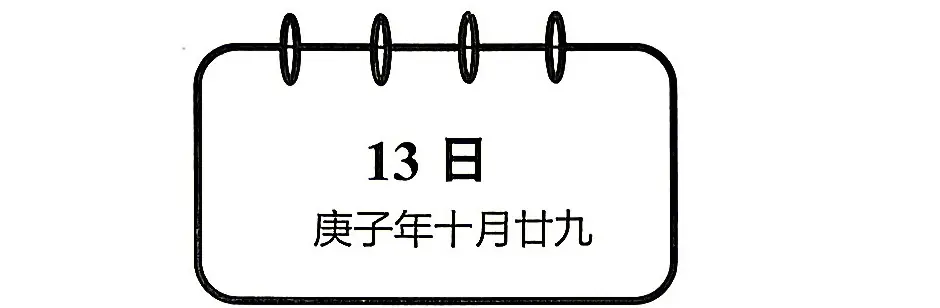
A.29 B.30 C.1 D.2
村民陶某承包一块长方形种植地，他将地分割成如图所示的4个小长方形，在A、B、C、D四块长方形土地上分别种植西瓜、花生、地瓜、水稻，其中长方形A、B、C的周长分别是20米、24米、28米，那么长方形D的最大面积是：
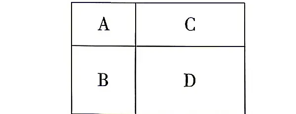
A.81 平方米 B.64 平方米 C.49 平方米 D.42 平方米
某单位实行弹性工作制，不严格规定上下班时间，但是上班打卡时间与下班打卡时间差应不少于9小时。某天上午小刘到单位打卡时，从镜子里看到时钟显示如下图。则小刘当天最早的下班打卡时间为：
A.18:05 B.18:35 C.12:05 D.17:55
一辆汽车在高速公路上以60千米/时的速度匀速行驶，此时司机开始以固定的加速度进行加速，加速后50秒内，汽车行驶了1千米。则汽车从开始加速，到加速至高速公路的速度上限120千米/时需要多长时间？
A.100 秒 B.125 秒 C.150 秒 D.180 秒
从甲到乙地含首尾两站共有15个公交站，在这些公交站上共有4条公交线路运行。其中，A公交车线路从第1站到第6站，B公交车线路为第3 站到第10 站，C公交车线路为第7站到第12 站，D公交车线路为第10 站到第15 站。小张要从甲地到乙地，要在这些公交线路中换乘，不在两站之间步行也不往反方向乘坐，每条公交线路只坐一次，则共有多少种不同的换乘方式？
A.72 B.64 C.52 D.48
从所给四个选项中，选择最合适的一个填入问号处，使之呈现一定规律性：
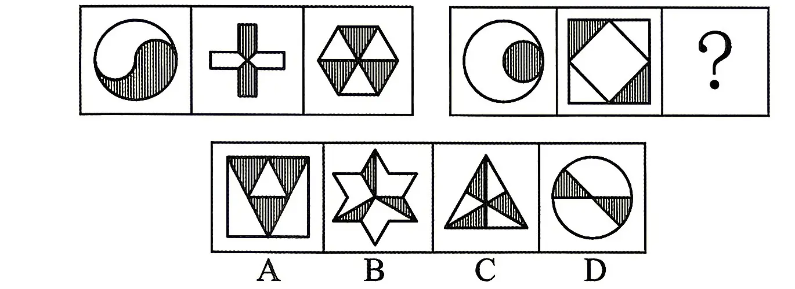
从所给四个选项中，选择最合适的一个填入问号处，使之呈现一定规律性：
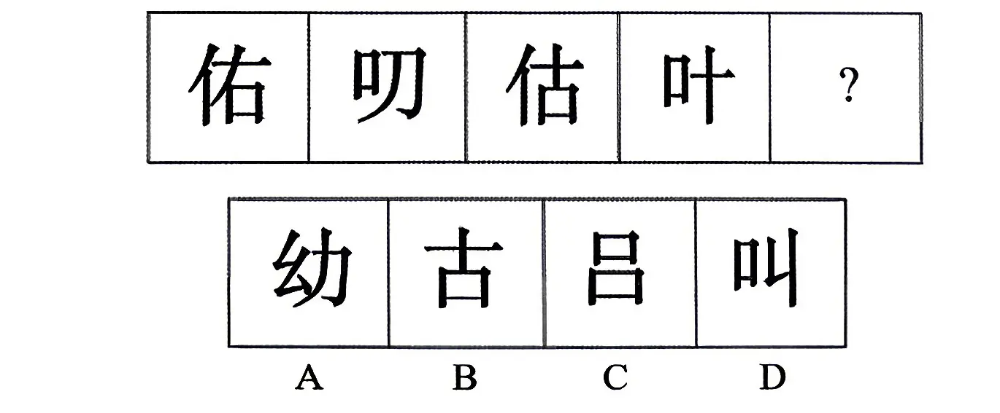
从所给四个选项中，选择最合适的一个填入问号处，使之呈现一定规律性：
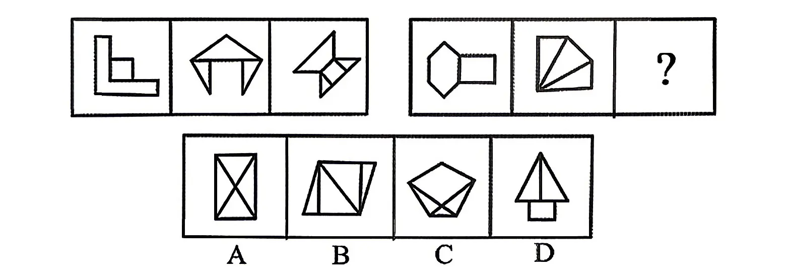
把下面的六个图形分为两类，使每一类图形都有各自的共同特征或规律，分类正确的一项是：
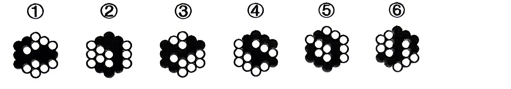
A.①③④；②⑤⑥ B.①⑤⑥；②③④ C.①②⑥；③④⑤ D.①④⑥；②③⑤
下列纸盒的外表面展开图中，哪项折叠成的纸盒和其他三个不同？（）
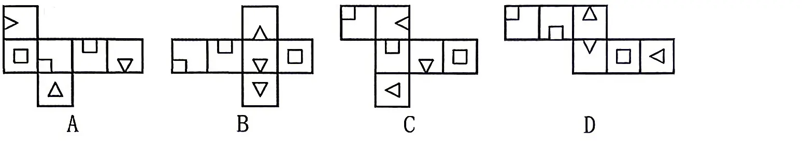
避雷针效应：在高大建筑物顶端安装一个金属棒，用金属线把这根金属棒与埋在地下的一块金属板连接起来，利用金属棒的尖端放电及金属的导电性，使云层所带的电被大地带的电直接中和，从而保护建筑物等避免雷击。心理学上经常运用“避雷针效应”：当有不满情绪的时候可以通过一根“导线”，将不良情绪导入到其他地方，进而维持本来的平衡。根据上述定义，下列选项体现避雷针效应的是：
A.大禹治水 B.愚公移山 C.尾生抱柱 D.卧冰求鲤
心理学上有一个著名的"瓦伦达效应"。瓦伦达是美国一个著名的高空走钢索的表演者，他在一次重大的表演中，不幸失足身亡。他的妻子事后说，我知道这一次一定要出事，因为他上场前总是不停地说，这次太重要了，不能失败;而以前每次成功的表演，他总想着走钢丝这件事本身，而不去管这件事可能带来的一切。心理学家把这种为了达到一种目的总是患得患失的心态命名为“瓦伦达心态”。根据上述定义，下列属于瓦伦达心态的是：
A.某足球队前锋几个赛季的进球都很少，但是他在门前的机会有很多，可是每当机会来临的时候，他那临门一脚，总是把球打到门框外
B.王某平时学习成绩优异，承载了父母的无限期望，想在高考中证明自己，不让父母失望，成绩出来后却没有平时好
C.我们去参加考试时，出门前想着千万别忘了带准考证，结果到考场发现没有带，没参加上考试
D.李某参加了一场对他来说很重要的演讲比赛并一路过关斩将闯进决赛，对于决赛他感到非常紧张
2023 年上半年，我国入境旅游 6923 万人次，比上年同期下降 0.4%。其中，外国人 1482 万人次，增长 4.0%；香港同胞 3908 万人次，下降 2.7%；澳门同胞 1233 万人次，增长 1.1%；台湾同胞 300 万人次，增长 4.1%。
表 2017-2023H 我国旅游业情况统计（数值据原表逐格核对）
| 国内旅游 | 入境旅游 | 旅游总收入 （万亿元） | |||
|---|---|---|---|---|---|
| 游客人次 （亿人次） | 旅游收入 （万亿元） | 游客人次 （亿人次） | 旅游收入 （亿美元） | ||
| 2017 年 | 29.57 | 2.27 | 1.32 | 500.28 | 2.59 |
| 2018 年 | 32.62 | 2.63 | 1.29 | 516.64 | 2.95 |
| 2019 年 | 36.11 | 3.03 | 1.28 | 569.13 | 3.73 |
| 2020 年 | 40.00 | 3.42 | 1.34 | 1136.50 | 4.13 |
| 2021 年 | 44.40 | 3.94 | 1.38 | 1200.00 | 4.69 |
| 2022 年 | 50.00 | 4.57 | 1.39 | 1234.00 | 5.40 |
| 2023H | 28.26 | 2.45 | 0.69 | 618.00 | — |
注：2023H，代表 2023 年上半年。
下列选项中，能够从上述资料中推出的是：
A.2017-2023年，我国旅游总收入的年均增长量是0.5万亿元
B.2023年上半年，我国入境旅游人次中港澳台同胞及外国人所占比重高于上年的有2个
C.假设维持2017-2022 年的旅游总收入的年均增量，2025年我国旅游总收入约7.1亿元
D.2022年下半年，我国入境旅游人次超过六千万人次
图 1 2012-2017 年我国固定资产投资（不含农户）情况（保留卷面原图）
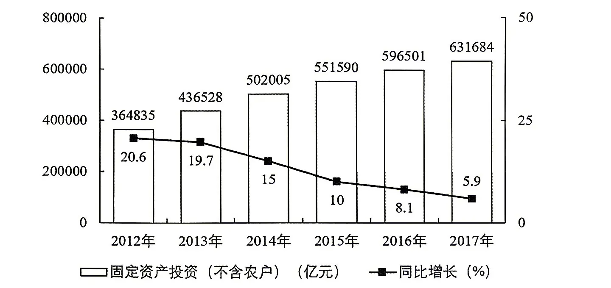
图 2 2012-2017 年我国国有及国有控股投资情况（保留卷面原图）
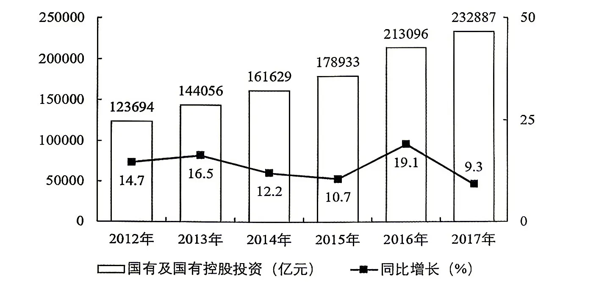
以下折线图中，能准确反映 2014-2017年我国国有及国有控股投资同比增量的是：
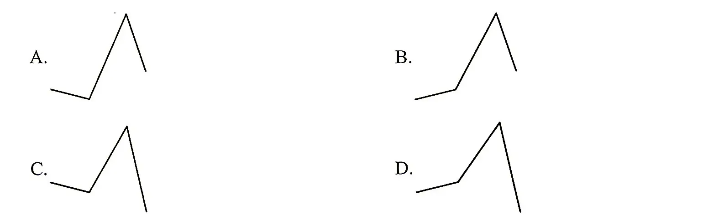
2020 年一季度，A 省地区生产总值 7821.3 亿元，同比下降 6.5%。其中，第一产业增加值 416.8 亿元，下降 4.7%；第二产业增加值 2968.1 亿元，下降 10%；第三产业增加值 4436.4 亿元，下降 3.7%。
一季度，全省房地产开发投资 1216.5 亿元，下降 7.6%。商品房销售面积 1355.8 万平方米，下降 29.4%；销售额 962.3 亿元，下降 29.2%。3 月末，商品房待售面积 2005 万平方米，增长 26.6%。
一季度，全省社会消费品零售总额 3901.7 亿元，同比下降 11.9%，降幅比全国低 7.1 个百分点。其中，限额以上消费品零售额 1109.4 亿元，下降 14.3%。
一季度，全省出口 81 亿美元，下降 8.1%；进口 73.8 亿美元，增长 0.6%。实际利用外商直接投资 44.9 亿美元，增长 2.4%。
一季度，全省城镇新增就业 17.8 万人，完成年度目标任务的 28.2%；失业人员再就业 1.9 万人；困难人员再就业 0.6 万人。全省居民人均可支配收入 7625 元，同比增长 1.9%。
2020 年一季度，A 省商品房销售均价约比上年同期：
A.上升 0.15% B.下降 0.15% C.上升 0.28% D.下降 0.28%
不能从上述材料中推出的是：
A.2020年一季度，全国社会消费品零售总额同比下降19%
B.2020年3月末，A 省商品房待售面积同比减少564.6万平方米
C.2020 年一季度，A 省进出口总额同比下降3%以上
D.2020年一季度，A省居民人均可支配收入同比增长不到150元
2019 年 1~11 月，全国邮政行业业务收入（不包括邮政储蓄银行直接营业收入）累计完成 8681.5 亿元，同比增长 21.6%；业务总量累计完成 14517.3 亿元，同比增长 31.2%。
其中，邮政服务业务总量累计完成 2259.8 亿元，同比增长 25.4%；邮政寄递服务业务量累计完成 224.6 亿件，同比增长 3.5%；邮政寄递服务业务收入累计完成 390.6 亿元，同比增长 15.3%。
表 2019 年 1~11 月快递业务结构（数值据原表逐格核对）
| 快递业务量 | 快递业务收入 占比（%） | ||
|---|---|---|---|
| 占比（%） | 上年占比（%） | ||
| 同城 | 17.5 | 22.6 | 10.1 |
| 异地 | 80.2 | 75.2 | 52.8 |
| 国际/港澳台 | 2.3 | 2.2 | 9.9 |
| 其他 | 27.2 | ||
图 2012~2019 年全国快递业务量（单位：亿件）（保留卷面原图）
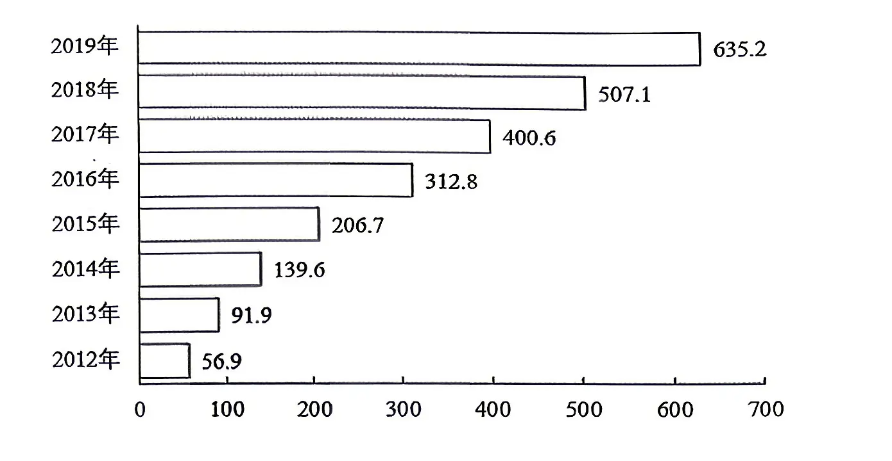
2018年1~11月，全国平均每件邮政寄递服务业务收入多少元？
A.1.32 B.1.56 C.1.74 D.1.92
若2019 年全国各类快递业务量占比与 2019 年1-11 月保持一致，则 2019 年全国同城快递业务量为多少亿件？
A.14.7 B.39.3 C.76.3 D.111.2
2013~2019年，全国快递业务量平均每年增长多少亿件？
A.90.6 B.96.4 C.101.3 D.105.6
《关于制定国民经济和社会发展第十五个五年规划的建议》发布，下列关于“十五五”时期经济社会发展的主要目标，说法正确的是（）。
A.全要素生产率稳步提升，居民消费率明显提高，出口拉动经济增长主动力作用增强
B.教育科技人才一体发展格局全面形成，基础研究和原始创新能力显著增强
C.居民收入增长和经济增长同步、劳动报酬提高和劳动生产率提高同步，中等收入群体持续扩大
D.绿色生产生活方式基本形成，碳中和目标如期实现
2025年9月，中共中央印发《中国共产党思想政治工作条例》。下列相关说法正确的有（）。
①思想政治工作是党的优良传统和突出政治优势，要牢固树立人心是最大的政治的理念
②要把立德树人作为根本任务
③要把巩固马克思主义在意识形态领域的指导地位放在首位
④要以理想信念教育为核心，以调动一切积极因素为着力点
A.1 项 B.2 项 C.3 项 D.4 项
对违法犯罪的党员，应当按照规定给予党纪处分，做到适用纪律和适用法律有机融合，党纪政务等处分相匹配。下列情形中，应当给予开除党籍处分的是（）。
A.强迫、唆使他人违纪
B.拒不上交或者退赔违纪所得
C.违纪受处分后又因故意违纪应当受到党纪处分
D.因过失犯罪，被依法判处四年有期徒刑
根据《中华人民共和国行政许可法》，以下行政机关可以设定临时性行政许可的是( )。
A.镇人民政府的规定 B.县人民政府的规定 C.市人民政府规章 D.省人民政府规章
在公文中，下列有关联合行文要注意的问题错误的是（）。
A.行文的各机关部门必须是同级的
B.联合行文应当确有必要，而且单位宜多
C.联合行文对于共同贯彻执行有关方针、政策或办理事务是非常有利的
D.几个平行机关或部门联合行文应把相对应的各机关都列为主送机关
①诗词里有乐观的生活态度，有昂扬向上的生活精神
②“自古逢秋悲寂寥，我言秋日胜春朝。晴空一鹤排云上，便引诗情到碧霄。”
③源于这些诗歌已内化为中国人的情感和认知，成为具有中国特色的表达方式
④习总书记指出：“古诗文经典已融入中华民族的血脉，成了我们的基因。”
⑤诗的国度就是这样达观地看待困难，深情地面对生活，中国诗词的生命于此可见一斑
⑥由此想到疫情防控之际，医药科学是战胜病毒的先锋利器，而凝心聚力鼓舞斗志的则是医护人员“国有战，召必回，战必胜”铁血丹心的承诺
将以上6个句子重新排列，语序正确的是：
A.②①③④⑥⑤ B.②④③①⑤⑥ C.④⑤③②⑥① D.④③②①⑥⑤
在一次调研中，有问卷调研、当面访谈和电话访谈三种形式，其中参与问卷调研的有27人、电话访谈的有21人，三种都参与的有5人，既参与问卷调研又参与当面访谈的有9人，既参与问卷调研又参与电话访谈的有12人，既参与当面访谈又参与电话访谈的有7人，已知，只参与当面访谈的人数占总数的20%，则总共参与调研的有多少人？
A.55 B.50 C.45 D.40
某部队的士兵为偶数个。将所有士兵排成长和宽都大于1的实心矩形队列，发现只有一种排法，且该排法下长和宽都小于100。要使该部队在调入8名新兵之后仍为只有一种排法的实心矩形队列，问调入后人数最多可能为多少？
A.104 B.194 C.202 D.9029
从所给四个选项中，选择最合适的一个填入问号处，使之呈现一定规律性：
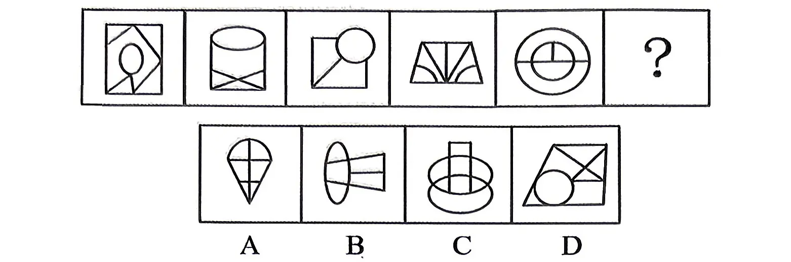
把下面的六个图形分为两类，使每一类图形都有各自的共同特征或规律，分类正确的一项是：
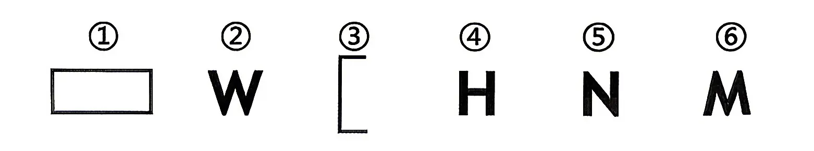
A.①②③；④⑤⑥ B.①②⑥；③④⑤ C.①③⑤；②④⑥ D.①⑤⑥；②③④
观察学习是指人们仅仅通过观察他人（榜样）的行为及其结果就能学会某种复杂行为。直接的观察学习指的是对示范行为的简单模仿；抽象性的观察学习指观察者从他人的行为中获得一定的行为规则或原理，以后在一定条件下观察者会表现出能体现这些规则或原理的行为，却不需要模仿所观察到的那些特殊的反应方式。根据上述定义，下列属于直接观察学习的是：
A.小张在电视上看到小朋友在玩具店通过哭闹的方式获得了自己想要的玩具后，在跟妈妈去商场的时候也停在玩具前哭闹不止
B.小王看到同桌小明举手回答问题后被表扬，于是在体育课上勇敢的在同学和老师面前做示范，得到了老师的表扬
C.实验中，大猩猩看到实验员叠箱子的动作获得箱子上的香蕉后，也通过叠箱子获得了头顶上悬挂着的香蕉
D.某初中一名学生看完暴力枪战片后，回到校园里，对同学和老师表现出攻击性的行为
假日期间，新能源汽车排队在高速服务区充电的场景冲上了热搜，新能源汽车里程焦虑问题引发人们的热议。一份针对新能源汽车消费的网络调查也显示，有85%的受访者表示存在里程焦虑，主要表现为担心新能源汽车续航里程不够长、充电设施不好找、充电补能速度慢，48%的受访者表示担心新能源汽车的电池安全问题，29%的受访者比较关注充电价格上涨导致的用车成本问题。上述调查表明，里程焦虑已经是新能源汽车使用者面临的最大问题。以下（）项为真，最能质疑论述中的结论？
A.目前市场上有些新能源汽车的续航里程已经高达1000公里
B.国家正在大力推进充电桩的建设布局，高速服务区充电桩数量已经能满足充电需求
C.新能源汽车超压充电技术已经实现了5分钟充电可续航300公里
D.实际购买新能源汽车的人只占了受访者的3%
本周六小王计划做 6 件事情：买菜，拖地，慢跑，打扫厨房，洗衣服，和修车，每件事情只做一次、同一时间段只做一件事情。已知情况如下：
（1）拖完地马上去买菜；
（2）打扫厨房早于买菜完成；
（3）修车早于洗衣服完成；
（4）修车和慢跑是紧挨在一起完成。
以下哪项替代条件（3）“修车早于洗衣服完成”，并且不会对现在的活动顺序产生影响？
A.洗衣服排在后三位之一 B.洗衣服和慢跑相继完成 C.慢跑早于洗衣服完成 D.洗衣服早于拖地完成
若 2020 年一季度，A 省第一产业增加值同比降幅与上年同期相同，则 2020 年一季度 A 省第一产业增加值约比 2018 年第一季度下降：
A.4.7% B.6.9% C.9.2% D.9.6%